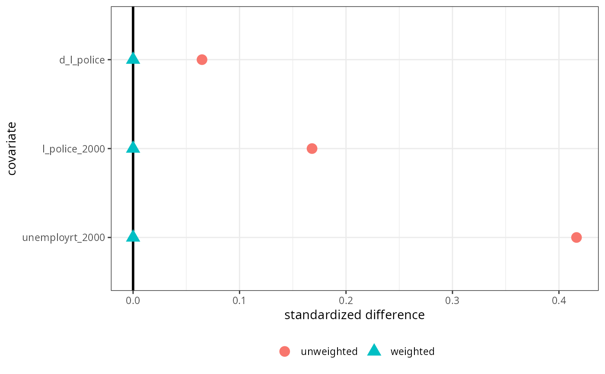

Implicit weights from AIPW, regression adjustment or IPW with two periods
Source:R/two_period_covs.R
two_period_aipw_weights.RdWrites the augmented inverse probability weighting (AIPW) estimator of the average treatment effect on the treated, with two periods, as a reweighting estimator and reports how well the implicit weights balance covariates (Caetano and Callaway, 2026). Regression adjustment and inverse probability weighting are special cases.
Usage
two_period_aipw_weights(
yname,
tname,
idname,
gname,
xformula = ~1,
d_covs_formula = NULL,
pscore_formula = xformula,
pscore_d_covs_formula = d_covs_formula,
extra_balance_vars_formula = NULL,
extra_balance_d_vars_formula = NULL,
balance_d_vars_post = TRUE,
data,
weightsname = NULL,
...
)Arguments
- yname
Name of the outcome variable.
- tname
Name of the time period variable. The data must have exactly two periods.
- idname
Name of the unit identifier.
- gname
Name of the group variable: 0 for untreated units and a single positive value (typically the second period) for treated units.
- xformula
One-sided formula for covariates in the outcome model, entered through their level in the first period (time-invariant covariates can be included here too). Default
~1.- d_covs_formula
One-sided formula for time-varying covariates in the outcome model entered through their change between the two periods. Default
NULL.- pscore_formula
One-sided formula for covariates (first-period levels) in the propensity score model. Defaults to
xformula.- pscore_d_covs_formula
One-sided formula for covariate changes in the propensity score model. Defaults to
d_covs_formula.- extra_balance_vars_formula
One-sided formula for additional covariates to report balance for, without including them in the models. Time-varying covariates enter through their value in the first period. Default
NULL.- extra_balance_d_vars_formula
One-sided formula for additional time-varying covariates to report balance for through their second-period level or their change (see
balance_d_vars_post). DefaultNULL.- balance_d_vars_post
For covariates in
extra_balance_d_vars_formula: ifTRUE(the default), report balance in their second-period level; ifFALSE, in their change between the two periods.- data
A balanced panel data.frame in long format.
- weightsname
Name of the column holding sampling weights, which must be constant over time within each unit. Default
NULL(unweighted).- ...
Not used; allows the same arguments as
did::att_gt().
Value
An object of class two_period_covs_obj; see
two_period_reg_weights(). Here est is the AIPW (or regression
adjustment / IPW) estimate of the ATT and weights the implicit AIPW
weights.
Details
The outcome model is a linear regression of the change in the outcome on the covariates among untreated units; the propensity score is a logit. Different covariates can enter the two models:
regression adjustment: covariates in
xformulaandd_covs_formula, withpscore_formula = ~1andpscore_d_covs_formula = ~1;inverse probability weighting: covariates in
pscore_formula, withxformula = ~1.
The implicit weights balance every covariate in the outcome model exactly
(levels and changes), unlike TWFE regression weights
(two_period_reg_weights()), which balance only the covariates that
enter the regression. Without d_covs_formula, the estimate equals
did::att_gt() with the same covariates (est_method = "dr", "reg" or
"ipw"). Comparison units
with an estimated propensity score of 0.995 or more are trimmed, as in
DRDID.
References
Caetano, Carolina and Brantly Callaway. "Difference-in-Differences when Parallel Trends Holds Conditional on Covariates." Working paper (2026). doi:10.48550/arXiv.2406.15288
See also
two_period_reg_weights(), implicit_aipw_weights() for more
than two periods.
Examples
data(castle, package = "causaldata")
castle <- as.data.frame(castle)
castle2 <- subset(castle, year %in% c(2000, 2010))
castle2$G <- BMisc::get_group(castle2, "sid", tname = "year", treatname = "post")
# regression adjustment: no covariates in the propensity score
ra <- two_period_aipw_weights(
yname = "l_homicide", tname = "year", idname = "sid", gname = "G",
xformula = ~ l_police + unemployrt, d_covs_formula = ~l_police,
pscore_formula = ~1, pscore_d_covs_formula = ~1, data = castle2
)
#> Warning: 'BMisc::makeBalancedPanel' is deprecated.
#> Use 'make_balanced_panel' instead.
#> See help("Deprecated")
#> Warning: 'BMisc::rhs.vars' is deprecated.
#> Use 'rhs_vars' instead.
#> See help("Deprecated")
#> Warning: 'BMisc::rhs.vars' is deprecated.
#> Use 'rhs_vars' instead.
#> See help("Deprecated")
#> Warning: 'BMisc::addCovToFormla' is deprecated.
#> Use 'add_cov_to_formula' instead.
#> See help("Deprecated")
#> Warning: 'BMisc::rhs.vars' is deprecated.
#> Use 'rhs_vars' instead.
#> See help("Deprecated")
#> Warning: 'BMisc::rhs.vars' is deprecated.
#> Use 'rhs_vars' instead.
#> See help("Deprecated")
#> Warning: 'BMisc::rhs.vars' is deprecated.
#> Use 'rhs_vars' instead.
#> See help("Deprecated")
#> Warning: 'BMisc::rhs.vars' is deprecated.
#> Use 'rhs_vars' instead.
#> See help("Deprecated")
#> Warning: 'BMisc::rhs.vars' is deprecated.
#> Use 'rhs_vars' instead.
#> See help("Deprecated")
#> Warning: 'BMisc::addCovToFormla' is deprecated.
#> Use 'add_cov_to_formula' instead.
#> See help("Deprecated")
#> Warning: 'BMisc::getWeightedDf' is deprecated.
#> Use 'weighted_ecdf' instead.
#> See help("Deprecated")
#> Warning: 'BMisc::getWeightedDf' is deprecated.
#> Use 'weighted_ecdf' instead.
#> See help("Deprecated")
#> Warning: 'BMisc::getWeightedDf' is deprecated.
#> Use 'weighted_ecdf' instead.
#> See help("Deprecated")
#> Warning: 'BMisc::getWeightedDf' is deprecated.
#> Use 'weighted_ecdf' instead.
#> See help("Deprecated")
#> Warning: 'BMisc::getWeightedDf' is deprecated.
#> Use 'weighted_ecdf' instead.
#> See help("Deprecated")
#> Warning: 'BMisc::getWeightedDf' is deprecated.
#> Use 'weighted_ecdf' instead.
#> See help("Deprecated")
#> Warning: 'BMisc::getWeightedDf' is deprecated.
#> Use 'weighted_ecdf' instead.
#> See help("Deprecated")
#> Warning: 'BMisc::getWeightedDf' is deprecated.
#> Use 'weighted_ecdf' instead.
#> See help("Deprecated")
#> Warning: 'BMisc::getWeightedDf' is deprecated.
#> Use 'weighted_ecdf' instead.
#> See help("Deprecated")
#> Warning: 'BMisc::getWeightedDf' is deprecated.
#> Use 'weighted_ecdf' instead.
#> See help("Deprecated")
#> Warning: 'BMisc::getWeightedDf' is deprecated.
#> Use 'weighted_ecdf' instead.
#> See help("Deprecated")
#> Warning: 'BMisc::getWeightedDf' is deprecated.
#> Use 'weighted_ecdf' instead.
#> See help("Deprecated")
#> Warning: 'BMisc::getWeightedDf' is deprecated.
#> Use 'weighted_ecdf' instead.
#> See help("Deprecated")
#> Warning: 'BMisc::getWeightedDf' is deprecated.
#> Use 'weighted_ecdf' instead.
#> See help("Deprecated")
#> Warning: 'BMisc::getWeightedDf' is deprecated.
#> Use 'weighted_ecdf' instead.
#> See help("Deprecated")
#> Warning: 'BMisc::getWeightedDf' is deprecated.
#> Use 'weighted_ecdf' instead.
#> See help("Deprecated")
ra$est
#> [1] 0.1216572
# every covariate in the outcome model is balanced exactly
ra$cov_balance_df[, c("covariate", "unweighted_diff", "weighted_diff")]
#> covariate unweighted_diff weighted_diff
#> 1 d_l_homicide 0.118358801 1.216572e-01
#> 2 d_l_police -0.006490046 6.158268e-17
#> 3 l_police_2000 0.034479255 0.000000e+00
#> 4 unemployrt_2000 0.362725820 -1.776357e-15
ggtwfeweights(ra)
